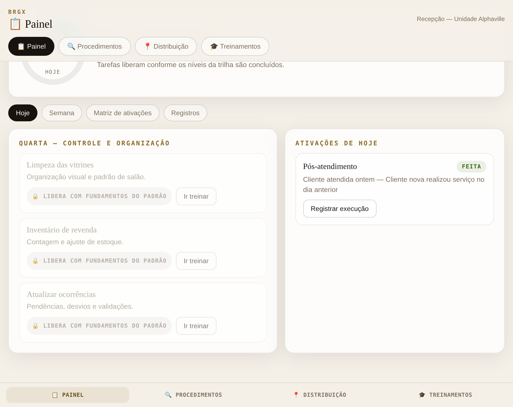
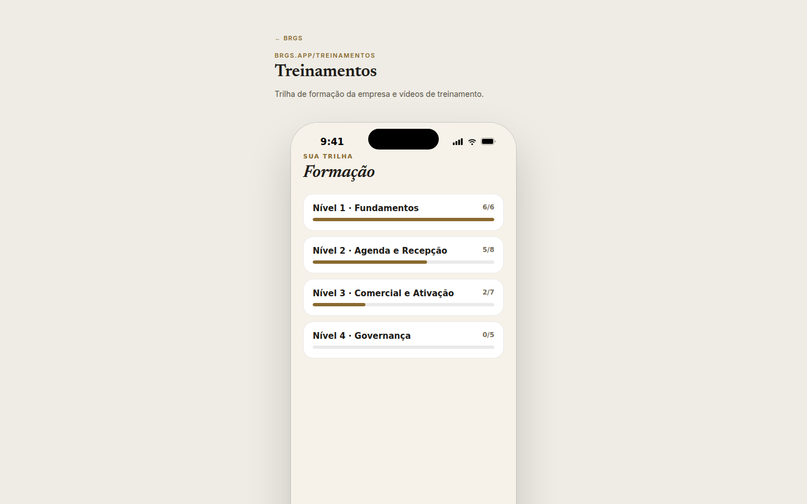
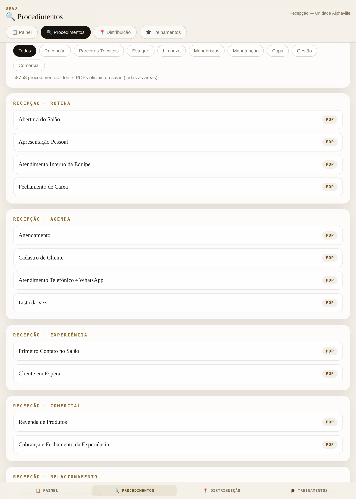
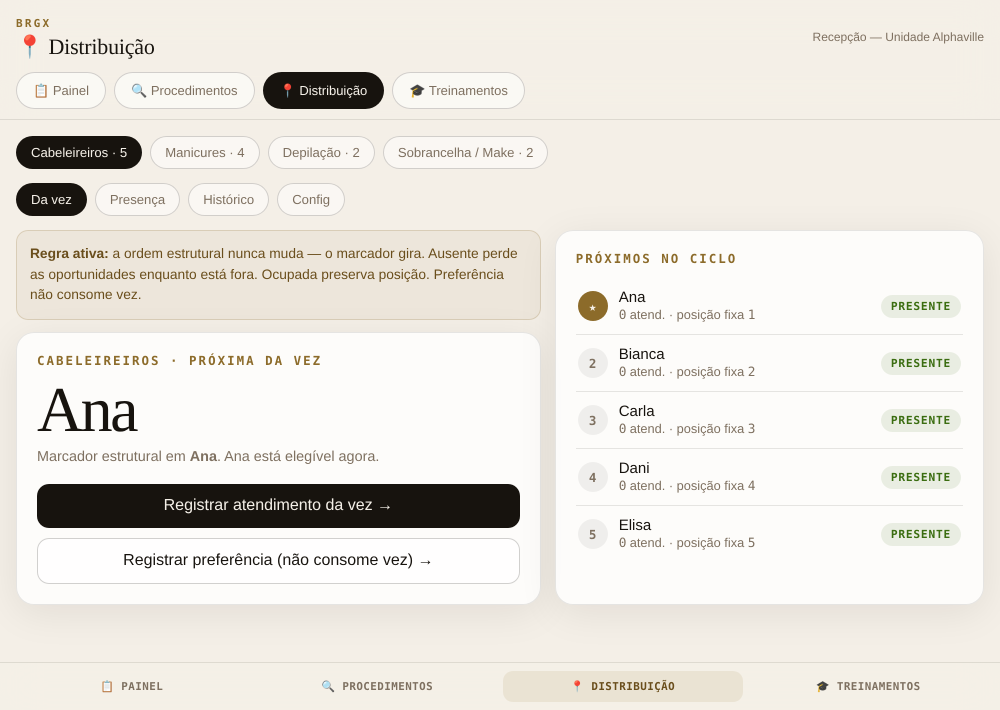

Um hub de módulos estratégicos configurado de acordo com o perfil e as necessidades de cada operação. Cada cliente tem acesso aos módulos relevantes para o seu momento — módulos podem ser adicionados ou removidos conforme a evolução do trabalho. As telas abaixo são capturas reais da plataforma.
Acesso incluído na Consultoria Estratégica Avançada. Também disponível para operações que já concluíram o diagnóstico ProPositivo e têm um plano de ação em mãos.
Rotina, execuções e indicadores-chave em um só lugar. O painel mostra o progresso do dia assim que a operação tem um cronograma ativo.

Conteúdo em vídeo organizado por trilhas com progressão em avaliações interativas. O colaborador conclui um nível e avança para o próximo — do fundamento à governança.

Buscador online com o passo a passo da operação, organizado por setor — recepção, cabeleireiros, manicures, estoque — acessível pela equipe a qualquer momento.

Gestão da fila e distribuição de clientes entre os profissionais por departamento, em tempo real. Organiza o fluxo do salão com transparência e agilidade.

Agente com voz personalizada por profissional. Primeira resposta, triagem e agendamento sem depender de disponibilidade humana imediata.
Rotinas, atividades e responsáveis organizados por data e frequência. A operação sabe o que acontece, quando acontece e de quem é a responsabilidade.
Playbook comercial, scripts, tratativa de objeções, sequência de conversão, reativação inteligente.
Mapeamento de processos, gatilhos e responsáveis por cada etapa da operação. Clareza sobre quem aciona o quê e em qual momento.
Ativação de clientes que faltaram ou desmarcaram, lembrete do período ideal de retorno para serviços recorrentes, plano de recorrência, indicação e parceria local.
Os módulos são liberados conforme o momento da operação e acompanham a consultoria.
Acessar a plataforma BRGX →